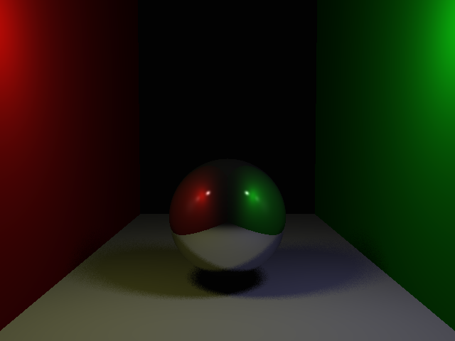
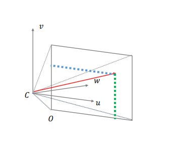
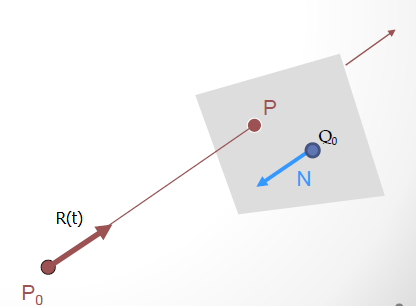
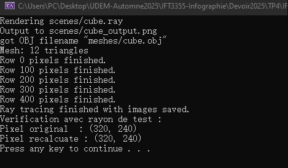
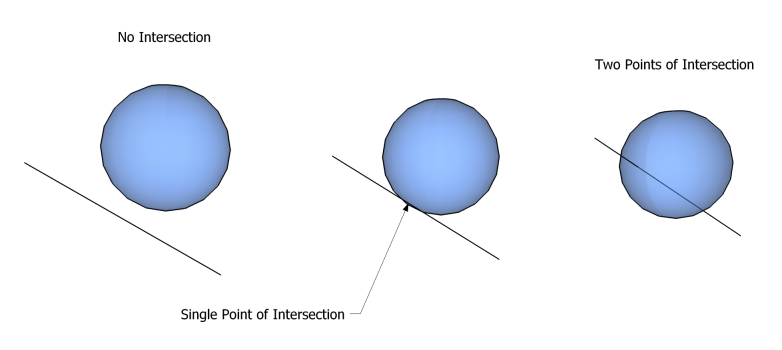
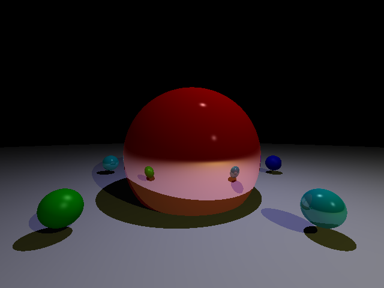
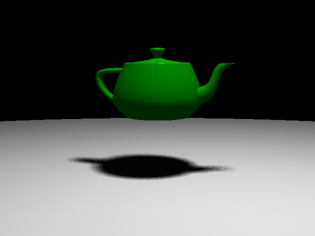
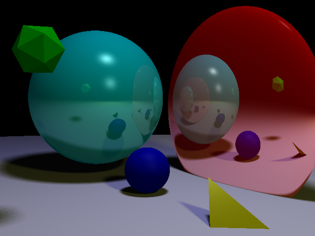

Building a Ray Tracer in C++
From Camera Rays and Geometric Intersections to Recursive Reflections and Monte Carlo Soft Shadows
A ray tracer is built from a surprisingly small set of ideas: construct a ray through every pixel, find the first surface it intersects, evaluate the light reaching that surface, and recursively launch new rays when the material requires it. This project was my implementation of that pipeline in pure C++, later extended with distributed sampling over finite light sources to produce soft shadows.

1. From Pixels to Rays
The first problem is purely geometric: for each pixel in the output image, construct a ray that starts at the camera and passes through the corresponding point on a perspective view plane.
I describe the camera using its position \(C\), a target point, an up vector, a vertical field of view, an aspect ratio, and a near-plane distance \(d\). From those values I build a local orthonormal basis:
\[ \mathbf w = \frac{C_{\text{target}}-C} {\|C_{\text{target}}-C\|} \] \[ \mathbf u = \frac{\mathbf w\times \mathbf{v}} {\|\mathbf w\times \mathbf{v}\|}, \qquad \mathbf v = \frac{\mathbf u\times\mathbf w} {\|\mathbf u\times\mathbf w\|}. \]Here \(\mathbf w\) points forward, \(\mathbf u\) points to the camera's right, and \(\mathbf v\) points upward.

1.1 Building the View Plane
With vertical field of view \(\theta\), the half-height of a view plane at distance \(d\) is
\[ h = d\tan\left(\frac{\theta}{2}\right). \]The dimensions of the plane are : \(l, r, t, b\)
And for an image of resolution \(N_x\times N_y\), the physical size of one pixel on this plane is therefore
\[ \Delta u=\frac{r - l}{N_x}, \qquad \Delta v=\frac{t - b}{N_y}. \]The center of the view plane is
\[ C_{\text{view}}=C+d\mathbf \cdot w \]and its lower-left corner is
\[ O = C + d\mathbf \cdot w - l\mathbf \cdot u - t\mathbf \cdot v, \]The implementation follows the derivation almost directly:
Vector C = scene.camera.position;
Vector w = (scene.camera.center - scene.camera.position).normalized();
Vector u = w.cross(scene.camera.up).normalized();
Vector v = u.cross(w).normalized();
double d = scene.camera.zNear;
double half_height = d * tan(deg2rad(scene.camera.fovy * 0.5));
double half_width = half_height * scene.camera.aspect;
double delta_u = (2.0 * half_width) / static_cast<double>(width);
double delta_v = (2.0 * half_height) / static_cast<double>(height);
Vector view_center = C + d * w;
Vector view_bottom_left = view_center - half_width * u - half_height * v;
1.2 Shooting Through the Center of a Pixel
For pixel \((i,j)\), I use its center rather than one of its corners. Its position on the view plane is
\[ \boxed{ P_{i,j} = O + \left(i+\frac12\right)\Delta u\ \cdot \mathbf u + \left(j+\frac12\right)\Delta v\ \cdot \mathbf v } \]The \(+\frac12\) offset is important: integer pixel coordinates identify cells, while the ray should pass through the center of that cell.
The parametric equation for a ray is
\[ R_{i,j}(t)=C+t \cdot ( P_{i,j} - C) \] \[ R_{i,j}(t)=C+t \cdot \mathbf V_{i,j} \]with
\[ \boxed{ \mathbf V_{i,j} = \frac{P_{i,j}-C} {\|P_{i,j}-C\|} }. \]Vector pixel_position =
view_bottom_left + (x + 0.5) * delta_u * u + (y + 0.5) * delta_v * v;
Vector dir = (pixel_position - C).normalized();
Ray ray(C, dir);1.3 Verifying the Projection
While implementing the camera, I used the inverse construction as a test: generate a ray for a known pixel, intersect that ray with the view plane, and verify that the original pixel coordinates can be recovered.

A plane passing through a point \(Q\), with normal \(\mathbf n\), is defined by
\[ (X-Q)\cdot\mathbf n=0. \]Substituting a ray \(R(t)=P_0+t\mathbf \cdot r\) gives
\[ (P_0+t\mathbf \cdot r-Q)\cdot\mathbf n=0, \] \[ (P_0-Q)\cdot\mathbf n + t(\mathbf r\cdot\mathbf n) =0, \]and therefore
The intersection point is then \(H=R(t_{intersect})\).
Because \(\mathbf u\) and \(\mathbf v\) are orthonormal, the coordinates of this offset along the view plane are simply its projections:
\[ \mathbf c=a\mathbf u+b\mathbf v, \] \[ \mathbf c\cdot\mathbf u = a(\mathbf u\cdot\mathbf u) + b(\mathbf v\cdot\mathbf u) = a, \] \[ \boxed{ a=\mathbf c\cdot\mathbf u, \qquad b=\mathbf c\cdot\mathbf v }. \]Dividing those distances by the pixel dimensions, and undoing the half-pixel offset, recovers the original pixel:
\[ i=\frac{a}{\Delta u}-\frac12, \qquad j=\frac{b}{\Delta v}-\frac12. \]
2. Intersecting the Scene
Once a primary ray exists, the renderer needs to determine which surface,
if any, is visible along that ray. Every geometric primitive implements an
intersection test, while Raytracer::trace() keeps the closest
valid hit.
2.1 Ray-Sphere Intersection
Consider the parametric ray
\[ R(t)=P_0+t\mathbf r. \]Component-wise,
\[ x(t)=p_x+r_xt, \qquad y(t)=p_y+r_yt, \qquad z(t)=p_z+r_zt. \]For a sphere of radius \(R\), centered at the origin in its local coordinate system,
\[ x^2+y^2+z^2=R^2. \]Requiring the point on the ray to also lie on the sphere gives
\[ (p_x+r_xt)^2 + (p_y+r_yt)^2 + (p_z+r_zt)^2 = R^2. \]Expanding and grouping by powers of \(t\) produces a quadratic:
\[ At^2+Bt+C=0, \]where
\[ A=r_x^2+r_y^2+r_z^2, \] \[ B=2(p_xr_x+p_yr_y+p_zr_z), \] \[ C=p_x^2+p_y^2+p_z^2-R^2. \]The solutions are
\[ t= \frac{-B\pm\sqrt{\Delta}}{2A}, \qquad \Delta=B^2-4AC. \]The discriminant gives the familiar three cases:
- \(\Delta<0\): no real root, therefore no intersection.
- \(\Delta=0\): one repeated root, so the ray is tangent to the sphere.
- \(\Delta>0\): two roots, giving two intersections with the sphere.

2.2 Local-Space Geometry
Objects can be translated, rotated, or scaled in the scene. Instead of deriving a different intersection equation for every transformed primitive, the engine transforms the incoming ray into the object's local coordinate system, performs the primitive test there, then transforms the resulting position and normal back into world space.
This keeps the geometric equations simple: a sphere can remain centered at the local origin, and a plane can remain at local \(z=0\).
2.3 Planes, Triangles, and Meshes
The same plane equation used to verify the camera is also used for actual plane and triangle intersection:
\[ t= -\frac{(P_0-Q)\cdot N} {\mathbf r\cdot N}. \]For triangles, the intersection point is projected to a suitable 2D plane and tested against the three triangle edges. Meshes add a useful first rejection step: an axis-aligned bounding box is tested before iterating through every triangle. If the ray misses the bounding box, the entire mesh can be discarded immediately.
3. Shading the Hit Point
Once the closest surface has been found, Raytracer::shade()
determines the color returned by that ray. I found it useful to think of
the complete result as a decomposition:
Where \(\mathcal L\) represents all punctual lights in the scene.
The implementation then mirrors this structure directly,
return material.emission
+ ambient
+ diffuse
+ specular
+ material.reflect * reflectedLight;3.1 Local Phong Illumination
At a surface point \(p\), let \(\mathbf N\) be the surface normal, \(\mathbf L\) the normalized direction toward the light, and \(\mathbf V\) the normalized direction toward the camera. Material and light colors are RGB vectors, so I use \(\odot\) below for component-wise multiplication (Hadamard product).
The ambient term is
\[ L_{\text{ambient}} = \mathbf k_a\odot\mathbf I_{l,a}. \]For direct lighting, the implementation uses distance attenuation
\[ f_{\text{att}}(d) = a_0+a_1d+a_2d^2, \] \[ A(d) = \frac{1}{f_{\text{att}}(d)}. \]The diffuse contribution is
\[ L_{l,\text{diff}} = A(d) \left( \mathbf k_d\odot\mathbf I_{l,d} \right) \max(0,\mathbf N\cdot\mathbf L). \]For the specular term I use the Phong reflection-vector formulation. The perfect reflection of the vector from the surface toward the light is
\[ \mathbf R = -\mathbf L + 2(\mathbf N\cdot\mathbf L)\mathbf N, \]giving
\[ L_{l,\text{spec}} = A(d) \left( \mathbf k_s\odot\mathbf I_{l,s} \right) \left[ \max(0,\mathbf R\cdot\mathbf V) \right]^\alpha. \]
where \( \alpha \) is the shininess of the material.
Putting it all together we obtain :
Blinn-Phong would instead construct the halfway vector \(\mathbf H= \frac{ (\mathbf L+\mathbf V) } { \|\mathbf L+\mathbf V\| } \) and use \((\mathbf N\cdot\mathbf H)^\alpha\).
The surrounding shading pipeline is otherwise structurally similar.
3.2 Visibility and Hard Shadows
Direct illumination only contributes when the light is visible from the hit point. For a point light, this is a binary visibility problem.
I launch a shadow ray from the intersection toward the light:
\[ R_s(t) = p_\varepsilon+t\mathbf L, \]where
\[ p_\varepsilon = p+\varepsilon\mathbf N. \]The small normal offset avoids immediately intersecting the same surface again because of floating-point error, a common artifact known as self-shadowing or shadow acne.
Let \(d\) be the distance to the light. Only intersections satisfying \(0<t<d\) can actually block it. This gives the visibility function
\[ V_l(p) = \begin{cases} 0, & \text{if an object blocks the segment from \(p\) to the light,}\\ 1, & \text{otherwise.} \end{cases} \]The renderer enforces that finite interval by initializing the shadow intersection depth to the light distance:
Vector shadowOrigin = intersection.position + N * 1e-4;
Ray shadowRay(shadowOrigin, L);
Intersection shadowHit;
shadowHit.depth = d;
bool inShadow = false;
for (Object* objPtr : scene.objects)
{
if (objPtr->intersect(shadowRay, shadowHit))
{
inShadow = true;
break;
}
}Diffuse and specular terms are accumulated only when the light is visible. Ambient illumination remains unaffected by the shadow test.
\[ L_{\text{direct}}(p) = \sum_{l\in\mathcal L} V_l(p) \left( L_{l,\text{diff}} + L_{l,\text{spec}} \right). \]Because the light is an infinitesimal point, \(V_l\) is either zero or one. The resulting shadow boundary is therefore perfectly sharp.
4. Recursive Mirror Reflections
Direct illumination gives the color of the surface itself, but a reflective material must also include light arriving through another direction. For a perfect mirror, that direction is deterministic.
Given a normalized incident ray direction \(\mathbf I\) and surface normal \(\mathbf N\), the reflected direction is
The new ray begins at the same intersection, again moved slightly along the normal to avoid immediately hitting the originating surface:
Vector I = ray.direction.normalized();
Vector R_direction = (I - 2.0 * N.dot(I) * N).normalized();
Vector R_origin = intersection.position + N * 1e-4;
Ray reflection_ray(R_origin, R_direction);
Vector reflection_color(0.0);
double reflection_depth = DBL_MAX;
if (trace(
reflection_ray,
rayDepth,
scene,
reflection_color,
reflection_depth))
{
reflectedLight = reflection_color;
}
This is where the renderer becomes naturally recursive:
trace() finds a surface, shade() creates a reflected
ray, and that ray enters trace() again. The recursion is capped
at a maximum depth of 10 so mutually reflective surfaces cannot recurse
indefinitely.

5. From Hard Shadows to Area Lights
Hard shadows expose a limitation of the point-light model. A point source has no spatial extent: from any surface point it is either completely visible or completely blocked. A finite emitter can instead be partially occluded. Some parts of the source may be visible while others are hidden, producing a penumbra.
To approximate that behavior, I keep the original point light as the center
of the source but replace the single shadow query by several queries toward
positions distributed over a disk of radius
AREA_LIGHT_RADIUS.
static const bool USING_SOFT_SHADOW = false;
static const int SOFT_SHADOW_SAMPLES = 32;
static const double AREA_LIGHT_RADIUS = 1.0;Enabling the soft-shadow branch changes the direct-light calculation from one visibility test into \(N\) sampled light positions. Each sample has its own direction, distance, attenuation, visibility, diffuse contribution, and specular contribution.
5.1 Constructing a Local Basis Around the Light
A disk is a two-dimensional object embedded in 3D space. I therefore need two perpendicular directions that span its local plane.
Starting with
\[ \mathbf w=\mathbf L, \]I choose an auxiliary coordinate axis \(\mathbf a\) that is not collinear with \(\mathbf w\). In the implementation, I choose the axis corresponding to the smallest absolute component of \(\mathbf w\), which avoids a near-degenerate cross product.
The remaining basis vectors are
\[ \boxed{ \mathbf u = \frac{\mathbf w\times\mathbf a} {\|\mathbf w\times\mathbf a\|} } \] \[ \boxed{ \mathbf v = \frac{\mathbf w\times\mathbf u} {\|\mathbf w\times\mathbf u\|} }. \]Vector w = L;
Vector a(0);
if (wx <= wy && wx <= wz)
a = Vector(1.0, 0.0, 0.0, 0.0);
else if (wy <= wz)
a = Vector(0.0, 1.0, 0.0, 0.0);
else
a = Vector(0.0, 0.0, 1.0, 0.0);
Vector u = w.cross(a, 0.0).normalized();
Vector v = w.cross(u, 0.0).normalized();The pair \((\mathbf u,\mathbf v)\) now gives a local 2D coordinate system in which points can be generated on the disk and then mapped back into world space.
6. Uniform Disk Sampling and Monte Carlo
Once the disk exists, the next problem is less obvious than it first appears: how do we choose random points so that every equal-area region of the disk has the same probability?
6.1 Why a Uniform Radius Is Not Uniform in Area
A tempting implementation would choose
\[ r=R\xi, \qquad \xi\sim U(0,1), \]together with a uniform angle. But equal intervals in \(r\) do not represent equal amounts of area.
A thin annulus between \(r\) and \(r+dr\) has area approximately
\[ A = \iint_D dA = \int_{0}^{2\pi} \int_{0}^{R} r \, dr \, d\theta = \pi \int_{0}^{R} r \, dr = \pi R^2 \]The circumference grows with \(r\), so outer radial intervals contain more area than inner ones. Choosing \(r\) uniformly would therefore place too many samples near the center relative to the disk's area.
What I actually want is for the probability of landing inside a radius \(r\) to equal the fraction of the disk's area contained there:
\[ F(r) = \frac{\pi r^2} {\pi R^2} = \frac{r^2}{R^2}. \]Let \(\xi_1\sim U(0,1)\). Setting
\[ \xi_1=\frac{r^2}{R^2} \]and inverting the cumulative distribution gives
There is no preferred angle on a full disk, so with an independent \(\xi_2\sim U(0,1)\),
Converting back to Cartesian coordinates,
\[ x=r\cos\theta, \qquad y=r\sin\theta. \]Finally, the sampled world-space light position is
\[ \boxed{ P_{\text{sample}} = P_L+x\mathbf u+y\mathbf v }. \]double r = AREA_LIGHT_RADIUS * std::sqrt(rand_uniform_01());
double theta = 2.0 * PI * rand_uniform_01();
double dx = r * std::cos(theta);
double dy = r * std::sin(theta);
Vector offset = u * dx + v * dy;
Vector sample_pos = light.position + offset;6.2 Averaging the Light Samples
For every sampled point \(x_i\) on the disk, I repeat the direct-light calculation:
- Construct the direction from the surface point to \(x_i\).
- Compute the new distance and attenuation.
- Launch a shadow ray toward \(x_i\).
- Discard the sample if that ray is blocked.
- Otherwise evaluate the diffuse and specular terms for that sample.
The direct contribution of an area light \(A_{l}\) at a point \(p\) can be seen as an integral of the form,
\[ L_{direct}(p) = \int_{A_l} f(p, x) \, dA(x), \]Where \(f(p,x_i)\) includes visibility, distance attenuation, and the local Phong response for the sampled light position.
We can approximate the final direct-light estimate with the average of those samples:
double diffuse_sum = 0.0;
double specular_sum = 0.0;
for (int i = 0; i < SOFT_SHADOW_SAMPLES; i++)
{
// sample_pos generated uniformly on the disk
Vector toLight_withOffset = sample_pos - intersection.position;
Vector newL = toLight_withOffset.normalized();
double d_newL = toLight_withOffset.length();
Ray shadowRay(intersection.position + N * 1e-4, newL);
Intersection shadowHit;
shadowHit.depth = d_newL;
bool blocked = false;
for (Object* obj : scene.objects)
{
if (obj->intersect(shadowRay, shadowHit))
{
blocked = true;
break;
}
}
if (blocked)
continue;
double attenuation_sample = 1.0 / (a0 + a1 * d_newL + a2 * d_newL * d_newL);
Vector R_sample = (-newL + 2.0 * N.dot(newL) * N).normalized();
diffuse_sum += attenuation_sample * std::max(0.0, N.dot(newL));
specular_sum += attenuation_sample * std::pow(std::max(0.0, R_sample.dot(V)), material.shininess);
}
double inv_samples = 1.0 / static_cast<double>(SOFT_SHADOW_SAMPLES);
diffuse += material.diffuse * light.diffuse * diffuse_sum * inv_samples;
specular += material.specular * light.specular * specular_sum * inv_samples;

7. Conclusion
The final renderer can be summarized as a sequence of increasingly richer ray queries.

A single primary ray is generated through the center of each pixel. The renderer finds its nearest geometric intersection, evaluates local Phong illumination, tests visibility using secondary shadow rays, and recursively follows perfect mirror reflections. The soft-shadow extension adds stochastic sampling, but only around the light source: several shadow/direct-light rays are distributed over a disk and their contributions are averaged.
That distinction is important. This is not path tracing: I do not launch many random paths per pixel or sample arbitrary bounce directions over the hemisphere to solve diffuse indirect illumination. The renderer is much closer to classical recursive ray tracing extended with distributed ray tracing for a finite light source.
What I like most about this project is how directly the mathematics maps to the program. Perspective projection becomes a few vector operations. A sphere intersection becomes a quadratic equation. Visibility becomes another ray. Mirror reflection becomes a recursive call. And a visual effect as familiar as a soft shadow ultimately comes from one probability-distribution detail: sampling a disk with \(r=R\sqrt{\xi}\) rather than a uniform radius.